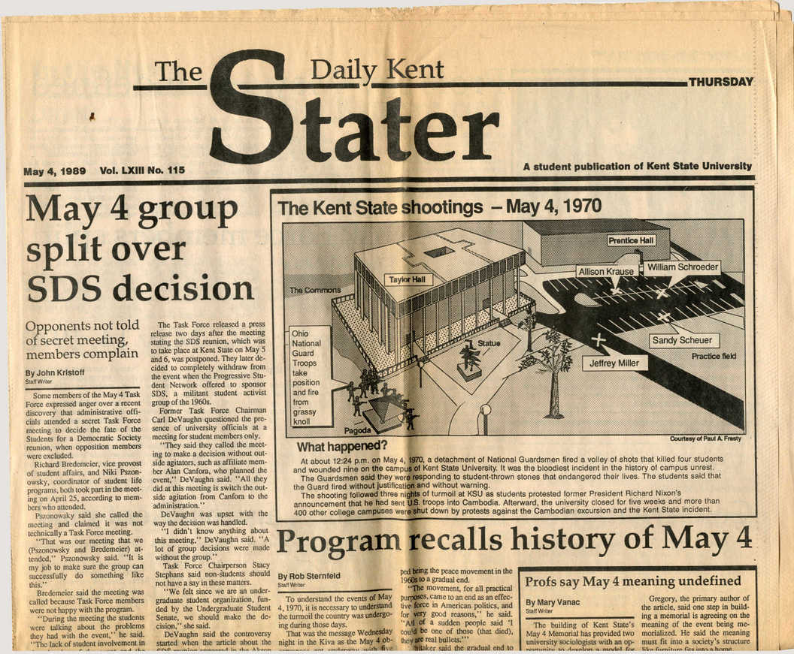

WALKOUT: A BRIEF HISTORY OF STUDENT ORGANIZING
The 1980s • After the protests of the late 1960s, many international student movements faced government oppression, resulting in less activity over subsequent decades. New legislation in Japan was introduced to allow police to crack down on protestors. In Mexico, the 1968 Tlatelolco Massacre and 1971 Corpus Christi Massacre were indications of the lengths government would go to in order to repress student activism. In Europe, protests in France subsided after the May 1968 Grenelle Agreements enacted changes for workers.
In the United States, the end of the Vietnam draft in the mid-1970s had removed some of the immediacy of anti-war protest for students. Changing student demographics also changed the face of student protest, and the way campus communities functioned: a larger number of students were beginning their studies as mature students, rather than directly after high school. For some students, higher education became a part-time and evening endeavor, as students balanced coursework with working and caring for families.
The largest focus of American student organizing in the 1980s was in solidarity with the South African anti-apartheid movement. Students placed pressure on their institutions to withdraw financial backing from US companies with ties to South Africa, these actions forced over 150 universities to divest. Students also organized in solidarity with Central American liberation movements, specifically, the Committee in Solidarity with the People of El Salvador started several student chapters on campuses.
Remember Kent State & Jackson State
Blockade at UC Berkeley
Student art and culture in the service of education

The Daily Kent Stater